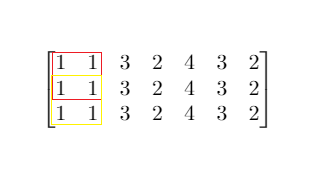

| Category | Difficulty | Likes | Dislikes |
|---|---|---|---|
| Algorithms | Medium | 1134 | 99 |
array | binary-search | matrix | prefix-sum
amazon | imc | google
Given a m x n matrix mat and an integer threshold, return the maximum side-length of a square with a sum less than or equal to threshold or return 0 if there is no such square.
Example 1:

Input: mat = [[1,1,3,2,4,3,2],[1,1,3,2,4,3,2],[1,1,3,2,4,3,2]], threshold = 4
Output: 2
Explanation: The maximum side length of square with sum less than 4 is 2 as shown.Example 2:
Input: mat = [[2,2,2,2,2],[2,2,2,2,2],[2,2,2,2,2],[2,2,2,2,2],[2,2,2,2,2]], threshold = 1
Output: 0
Constraints:
m == mat.lengthn == mat[i].length1 <= m, n <= 3000 <= mat[i][j] <= 1040 <= threshold <= 105